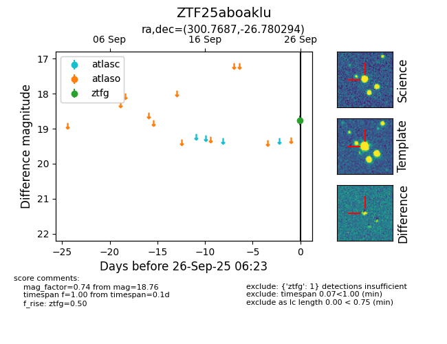

FINK: ZTF25aboaklu
Lasair: ZTF25aboaklu
ALeRCE: ZTF25aboaklu
ZTF25aboaklu (ztf,fink)
equatorial (ra, dec) = (300.7687,-26.78029)
galactic (l, b) = (14.9436,-26.72946)

last ztfg=18.76
1 ztfg detections